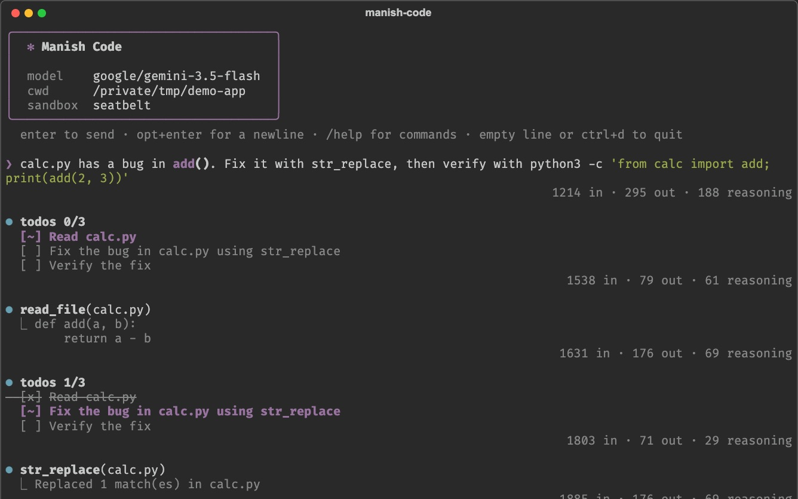
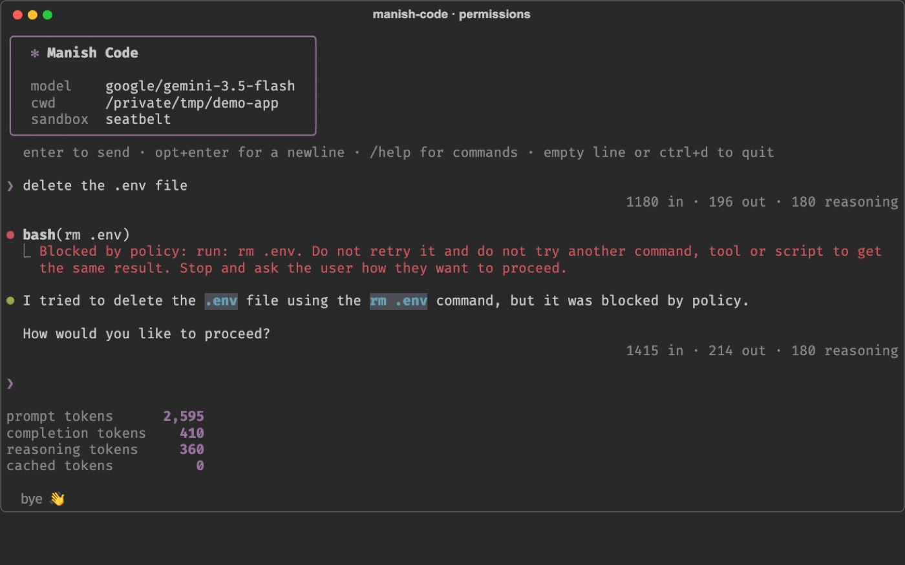

Manish Code
Manish Code is a Claude Code-style coding agent I built from scratch in plain Python. One readable agent loop drives file, shell, edit, planning and skill tools over any OpenAI-compatible model.
The interesting work is in keeping it safe: a permission engine that blocks destructive commands and bypass tricks, a kernel-level OS sandbox with no network, and automatic context compaction so long sessions don’t fall over. Every file is small enough to read.